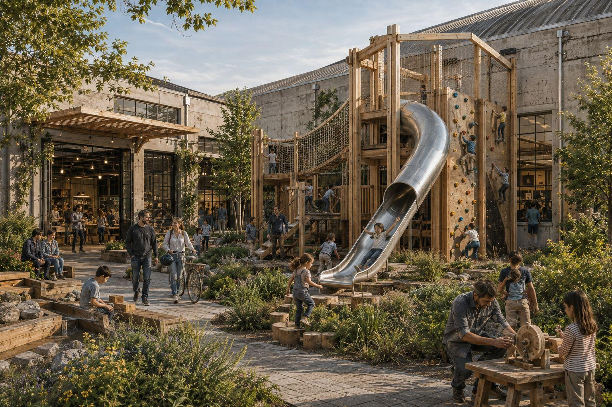
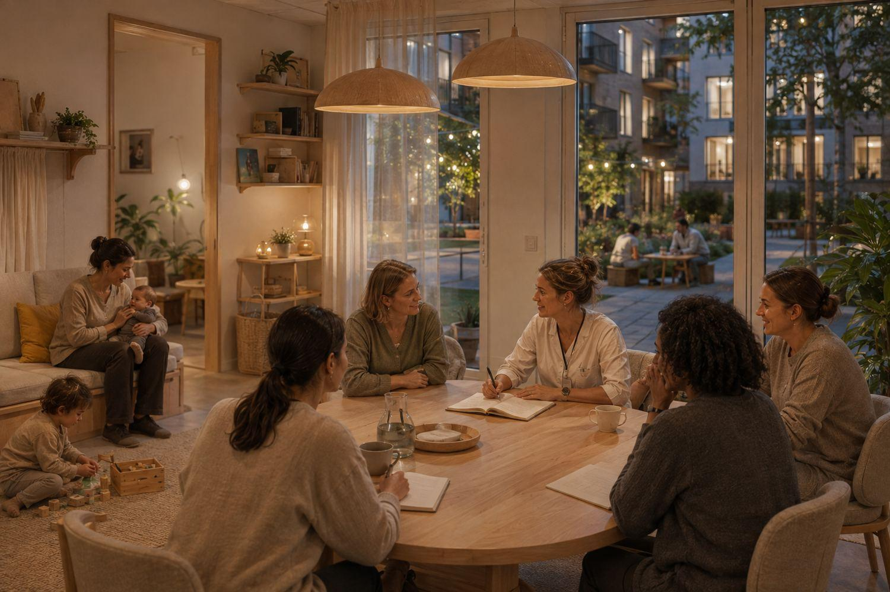
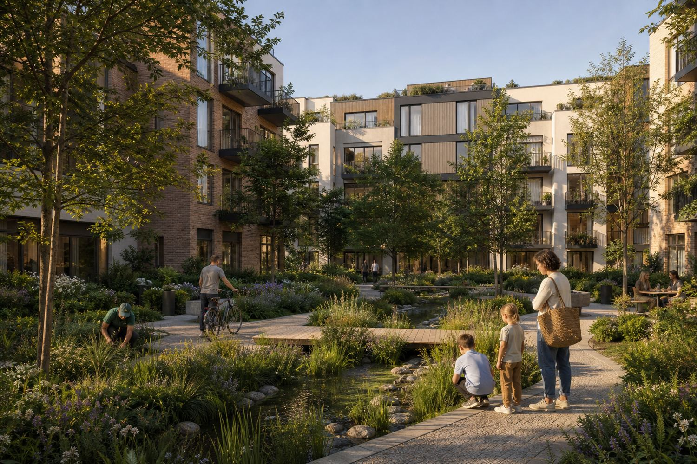
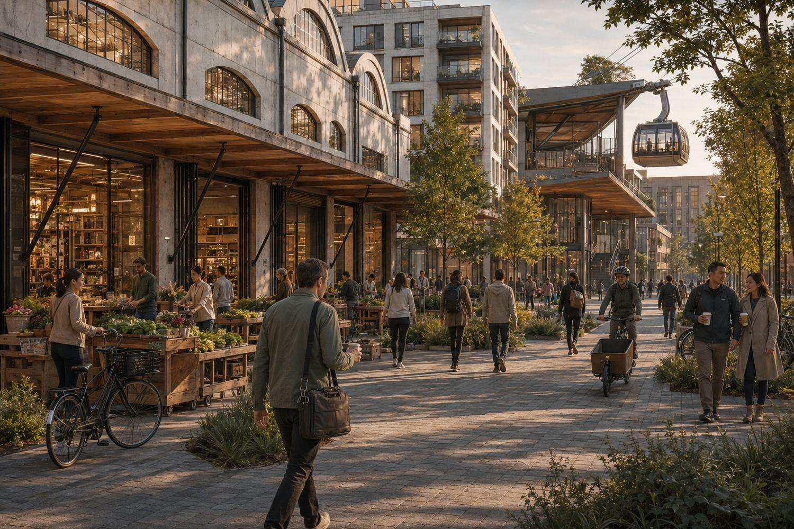
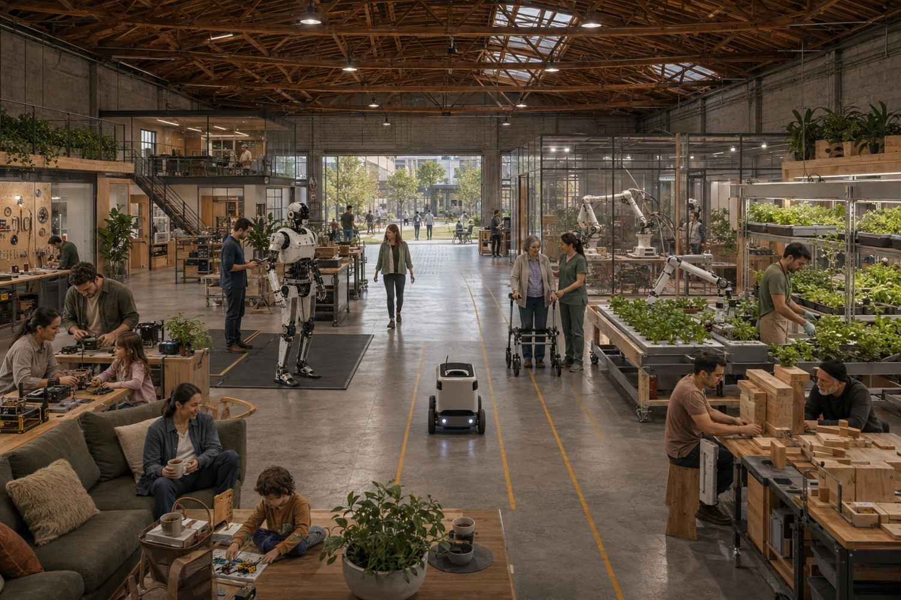
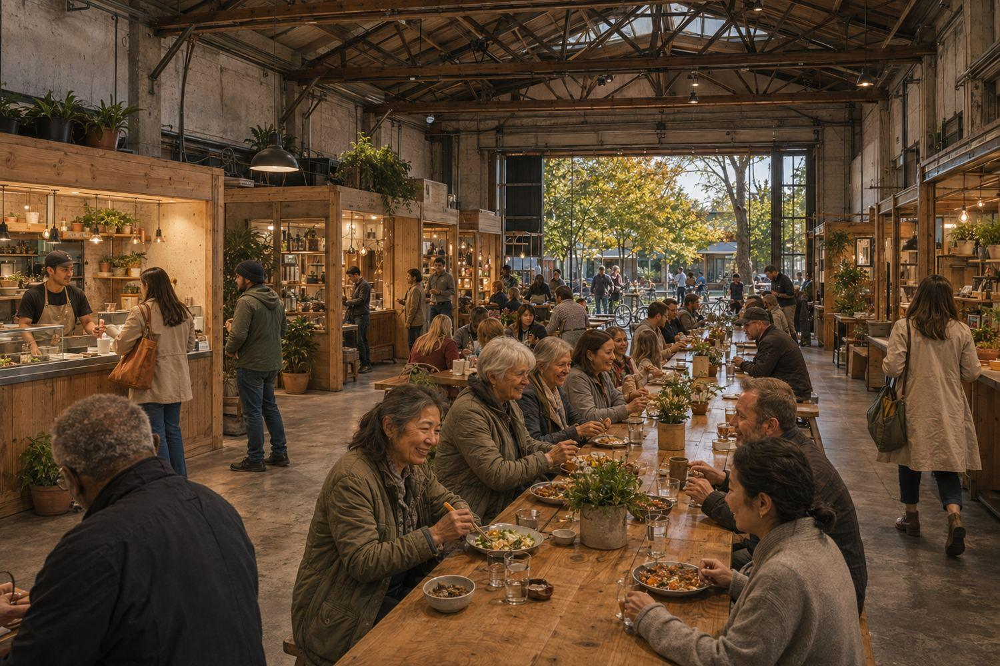
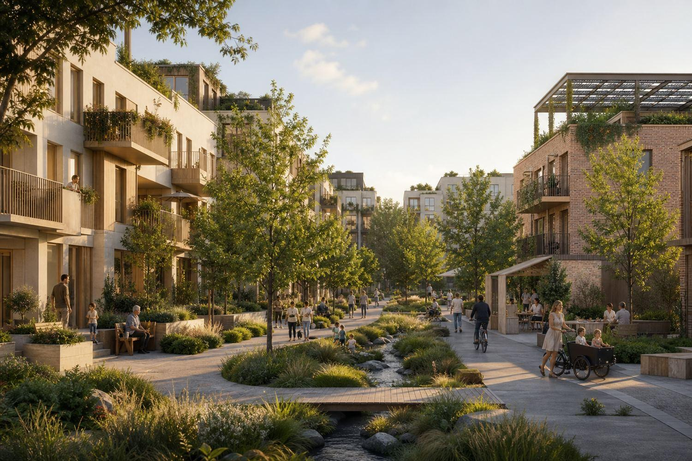

The studies that would show whether a district on the Willamette works, who is best placed to run each one, and what we are asking for.
Salem has done a great deal of planning work: Our Salem, the 2026-2031 Strategic Plan, the 2025 Housing Production Strategy, the Climate Action Plan strategy list and an economic opportunities analysis. What we went looking for and could not find is a current, published answer to these particular questions, for this ground, at district scale. If that work exists, we would like to be pointed at it and we will say so here.
Without answers, a developer has to build the evidence from scratch for every project, which is slow and expensive. So we are proposing that these questions be studied before anyone commits money to building. Each study would be commissioned by a public or institutional sponsor, carried out by people with no stake in the result, and published in full.
Publishing in full is part of the proposal. A study that can only confirm what its sponsor hoped for is of little use to a lender or to a city council.
The studies may show that a smaller first phase is the right one. That is a useful answer. A first phase the evidence supports is the one that can be financed.

These are the questions a lender, a public body or an investor asks before committing to a project at this scale. They can be divided among several sponsors, which is usually easier than finding one organization to carry all of them.
Near and long term market studies. What rents and sale prices existing Salem buildings support today, which is what a first phase can be financed against, and separately what would have to change for the district to support more.
Title, environmental, civil, geotechnical, utilities, flood and stormwater, transportation and easements across the study area. It would work inside the City’s refreshed Water and Wastewater Utility Master Plans, the Riparian Plan, riparian buffer standards, FEMA and ESA requirements and any floodplain zoning the City takes up. Every finding sorted into no material issue, solvable at a known cost, or a possible fatal flaw.
A framework of streets, blocks, parks, infrastructure and development parcels, then a first phase defined precisely enough to cost. It would also set out how the rest of the ground is used while the later phases are still ahead of it.
Which public tools apply and on what terms: urban renewal and tax increment financing, infrastructure participation, system development charges, the permitting pathway and housing incentives. The City has a system development charge review under way, and its climate strategy list proposes exempting walkable mixed-use development close to downtown, so the question is live rather than hypothetical. Each infrastructure item assigned to a party in writing.
What investors would need to see before committing: the market findings, the priced site risks, the public commitments, the land and entitlement budget, the first phase economics, and the milestones their money would pay for.
A jobs figure with its method published beside it: floor area by use, employment density for that use, published regional multipliers, construction jobs counted separately in person-years, and net jobs rather than gross.

A single predicted number hides what a sponsor needs to see: what separates a modest result from an ambitious one, and who controls each step in between.
What existing Salem buildings support today, with no district effect assumed. This is the case a first phase would be financed against, and it is deliberately conservative.
The floor plus the premium that comparable districts elsewhere have actually achieved, measured against those places rather than against Salem's current buildings.
Two or three futures, each with a stated trigger condition and a date. An employer arriving. A transportation decision. A housing program reaching scale. Each case names who controls the condition and when it would have to happen.
The claim behind this proposal is that Salem could add people while daily life and the local environment improve. These three measurements would test it.
Measured against the Salem average. If households in a compact riverfront district drive as much as households at the edge of the city, the premise fails and the studies would say so.
Acres per dwelling, compared with the same number of homes built at the edge of the city. This is what decides how much farmland and habitat get consumed, and how much new infrastructure the city has to build and then maintain.
The difference between reusing a building that already stands and replacing it, counted properly, including the energy performance a reused building gives up.
If the measurements support the claim, Salem has the basis for a district and a large amount of housing. If they contradict it, the city learns why at low cost, and so does every other mid-size city working on the same problem. Both results are worth the price of the studies.

Salem's adopted comprehensive plan already contains most of what we are describing, so the proposal works inside it. Two limits follow from that.
Salem's comprehensive plan directs the city to preserve large, flat, serviced industrial sites with highway access. The employment land east of the city is exactly that, and it should keep doing the job it was set aside for. This proposal asks for none of it.
Salem's 2015 economic opportunities analysis found a commercial deficit alongside an industrial surplus. The studies would start from that finding. It is one of the reasons the case here rests on housing, mixed use and the riverfront.
A third thing we do not yet know is which urban renewal area this ground sits in by the time any of it is decided. The City is adopting a North Waterfront urban renewal plan this year, and its boundary bears on anything proposed for the east bank. We have not seen the boundary, and settling it early would save everyone time.
There is an open question inside the second limit. That analysis was adopted in 2015 for a twenty year period and is now eleven years old, and industrial land has been used since. Whether the surplus is still the size the document reports is worth checking, and a study could settle it in a few weeks.

The questions depend on one another, so the order matters. Running them out of order is how study money gets spent twice.
These two are independent of each other and everything else depends on both. The market study sets what can be financed. The infrastructure study says whether there is anything to finance it on. Running them at the same time saves several months.
What the city, the region and the state would do takes the longest to settle, because it is a series of meetings rather than a report. Starting it alongside the technical work means the answers arrive together.
Once the market and infrastructure studies are finished, the masterplan and a costed first phase can be drawn against real constraints.
The jobs and tax revenue figures depend on what the framework says would be built, so producing them earlier produces a number with no method behind it. This is also where the questions about travel across the valley and housing capacity get folded back in.

Most of what is described here belongs to other parties. This is our understanding of how it would divide.
| Who | What only they can do |
|---|---|
| The City | Land use, the entitlement pathway, urban renewal financing, the public realm, and the decision about the future of the riverfront. |
| Region and State | Site readiness, transportation, workforce programs, and funding routes that a private applicant cannot access. |
| Employers | Stating what they need in order to hire and retain people here, and whether workforce housing nearby would affect their decisions. |
| Universities and colleges | Research capacity, the training pipeline, and shared instrumentation that no single company would buy alone. |
| The community | A seat in governance from the start, and the standing to say when it is going wrong. |
| Philanthropy | Funding the studies before there is a commercial answer to sell. |
| Now City | Assembling the questions, carrying development risk, and building a first phase. |

Now City is an eligible applicant for almost none of the funding available for studies of this kind, and that is appropriate. Public money should not pay a private developer to study its own site. What is needed are sponsors who can commission the studies independently and publish them: cities, counties, economic development organizations, universities and foundations. The questions divide cleanly, so no single organization has to carry all of them.
The first step is a meeting rather than a grant. The city, the region, the state, employers and local institutions in one room, agreeing which questions matter and who takes each one.
The results would be a public asset. Published answers about jobs, travel and housing in this region, available to every developer, employer and public body that comes after us, whatever those answers say about our project. They would also let private investors price Salem, which is why we want them done.
